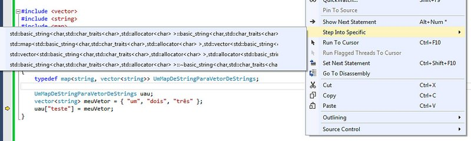

# O novo 'como não dar step into' do Visual Studio 2012/13
Caloni, 2014-08-01 <computer> [up] [copy]Toda vez que instalo um Visual Studio novo e começo a depurar sempre surge a necessidade de fazê-lo calar a boca nos step intos da STL, Boost, ATL e coisas-que-sei-que-não-vai-dar-pau. (Obviamente, quando dá pau, preciso ir no disassembly e cutucar a STL para ela me entregar qual o problema com o meu contêiner.)
Nas edições antigas da IDE (até o 2010) existia uma configuração no registro para isso. Desde o Visual Studio 2012 isso mudou, e agora existe um arquivo em _%programfiles(x86)%\Microsoft Visual Studio 11(ou12).0\Common7\Packages\Debugger\Visualizers_ chamado default.natstepfilter (gostei do detalhe do "nat": "nat thou step into, little bestard!"). Ele é um XML que já vem preenchido com algumas opções interessante:
<?xml version="1.0" encoding="utf-8"?> <StepFilter xmlns="http://schemas.microsoft.com/vstudio/debugger/natstepfilter/2010"> <Function><Name>__security_check_cookie</Name><Action>NoStepInto</Action></Function> <Function><Name>__abi_winrt_.*</Name><Action>NoStepInto</Action></Function> <Function><Name>_ObjectStublessClient.*</Name><Action>NoStepInto</Action></Function> <Function><Name>_Invoke@12</Name><Action>NoStepInto</Action></Function> <Function><Name>_RTC_Check(Esp|StackVars)</Name><Action>NoStepInto</Action></Function> <Function><Name>_chkstk</Name><Action>NoStepInto</Action></Function> <Function><Name>ATL::CComPtrBase.*::operator&</Name><Action>NoStepInto</Action></Function> <Function><Name>ATL::CComPtrBase.*::operator-></Name><Action>NoStepInto</Action></Function> <Function><Name>ATL::CHeapPtrBase.*::operator&</Name><Action>NoStepInto</Action></Function> <Function><Name>ATL::CHeapPtrBase.*::operator-></Name><Action>NoStepInto</Action></Function> <Function><Name>ATL::CComBSTR::operator&</Name><Action>NoStepInto</Action></Function> <Function><Name>std::forward<.*</Name><Action>NoStepInto</Action></Function> <Function><Name>std::move<.*</Name><Action>NoStepInto</Action></Function> <Function><Name>Platform::EventSource::Invoke.*</Name><Action>NoStepInto</Action></Function> <Function><Name>std::.*</Name><Action>NoStepInto</Action></Function> <Function><Name>boost::.*</Name><Action>NoStepInto</Action></Function> </StepFilter>
Podemos simplesmente adicionar mais duas opções para o parzinho STL/Boost:
<?xml version="1.0" encoding="utf-8"?> <StepFilter xmlns="http://schemas.microsoft.com/vstudio/debugger/natstepfilter/2010"> <Function><Name>std::.*</Name><Action>NoStepInto</Action></Function> <Function><Name>boost::.*</Name><Action>NoStepInto</Action></Function> </StepFilter>
A boa nova, pelo menos para o Visual Studio 2013, é que agora é possível, se quisermos, entrar nas funções que serão ignoradas:
Eu não sei qual vai ser a próxima novidade do step into, mas para mim, já está bem ótimo.
Fonte: Andy Pennell's Blog
# TDC2014: Trilha de C/C++ teve palestras para todos os gostos
Caloni, 2014-08-11 [up] [copy]A trilha da nossa(s) linguagem(ns) querida(s) do coração(ões) desse ano foi bem heterogênea: Rodrigo Madera pegando na mão dos ainda não-iniciados na magia-negra da TMP; Fabio Gallupo audaciosamente rabiscando uma roupagem funcional para C++11 (e 14, e 17!); Felipe Lavratti abrindo o código do seu projeto para vermos como é possível organizar e modularizar bem um código em C (sem classes); eu me virando nos trinta sem slides explicando os três passos de geração de código C/C++ (dei impersonate na conta do Rodrigo Strauss); Fernando Roberto do DriverEntry mais uma vez nos impressionando com as gamb... adpatações técnicas Microsoftianas no Windows para fazer tudo funcionar sem o usuário perceber (só quando as coisas ficam azuis); Fernando Luiz Rizzato mostrando que a equipe ex-Borland continua mandando muito bem criando uma IDE de C++ que porta código para diversos dispositivos mobile; eu novamente jorrando um dump das minhas memórias de 10 anos depurando código com WinDbg e suas powertools; e, acreditem ou não, nossa primeirA palestrante amante de C contando sua experiência em diversos projetos em um stand-up animado movido a diversos gifs animados.
O negócio é que tivemos um dia bem atípico, com direito a lotação (!) de nossa sala logo pela manhã. Os organizadores Rodrigo Strauss e Vinicius Jarina tiveram que dar um pushback na lista de vectors da sala. E todos, aparentemente, estavam no lugar certo.
Foi bom estar de volta nesse evento tão importante para mantermos os diferentes programadores unidos por um bem comum: mostrar que C/C++ está tão vivo como nunca!
# TDC2014: Trilhas de Segurança: o que é ser hacker?
Caloni, 2014-08-11 [up] [copy]Tirando a palestra-propaganda de Welington Strutz, a trilha de segurança no TDC desse ano foi bem heterogênea e focou tanto na proteção quanto nos ataques possíveis da web. Infelizmente, para alguns participantes, a grande questão de hacking se resume a apenas invasão de saites, o que nem era de longe o intuito da rotulação "hacker" no início dos famosos ratos de computador, em um ambiente com pouca RAM, nenhuma Web e onde o poder de processamento mais pesado rodava nas mentes criativas desses pequenos gênios da informática.
Mais para a frente, o conceito/definição de hackativismo foi virando algo cada vez mais genérico, e criou-se a cultura de ser possível ser hacker em qualquer nível de conhecimento humano. Essa é a definição que eu mais gosto e apoio, tanto por agregar o poder do hacking para toda a humanidade (seja você um burocrata, um trabalhador braçal, um designer de foguetes, um acadêmico, ...) quanto por não situar suas ações em um nível moral, algo completamente desnecessário e que só se tornou uma questão relevante por conta da mídia sensacionalista e as mentes mais conservadoras fazer-nos acreditar que estamos correndo um risco em deixar a internet nas mãos de pessoas altamente capacitadas, mas que não compartilham das suas crenças e valores.
Mesmo se focarmos apenas em computadores, engenharia reversa (de hardware e software), gambiarras de hardware e software conseguem fazer muito mais pela evolução tecnológica do que esse jogo de gato e rato de vulnerabilidades e ferramentas mágicas.
Porém, é necessária a existência de pessoas interessadas em atacar para que se crie a necessidade de se proteger. Dessa forma é que foram criados os X-Headers explicados por William Costa, os sistema de geração de números verdadeiramente aleatórios para se proteger de trapaceiros em um jogo de pôquer (minha palestra). Foi com o mesmo raciocínio que hoje existem valiosos insights sobre arquiteturas mais robustas discutidas por Rafael Lachi. É tendo curiosidade que encontramos falhas graves nos aplicativos mobile de hoje, como foi demonstrado tanto por Rafael Tosetto Pimentel quanto por Ivan Jeukens. E, não podemos nos esquecer, é essa nova geração do Antonio Costa que procura por brechas ridículas no login de diversos saites, forçando o mercado a se ajustar às melhores práticas.
De uma forma ou de outra, segurança deve se tornar um pensamento constante na vida dos programadores, ainda mais web e mobile. Essa não é uma tendência, essa deveria ser uma necessidade básica do dia-a-dia.
# Bons de Bico
Caloni, 2014-08-15 <cinema> <movies> [up] [copy]Free Birds é um desenho com qualidade técnica discutível e narrativa idem. Suas ideias oscilam entre o divertido e o repetitivo. Seus personagens são quase cópias de outros desenhos. Dito isto, o conjunto da obra mais impressiona por conseguir levar a história do começo ao fim a despeito de todas suas limitações.
A história envolve viagem no tempo em um objeto que não apenas se assemelha a um ovo como à nave de Ellie em Contato (com suas paredes translúcidas), ou seja, espere por todas as homenagens necessárias a obras que brincam com esses conceitos, sejam o clássico Contato já citado ou os tri-clássicos De Volta Para o Futuro (há uma citação "divertidinha" de Doc. Brown a respeito de uma pessoa se encontrar com ela mesma do passado).
Mesmo com piadas faltando aquele toque a mais e com pedaços de histórias não-originais, ainda assim a dedicação pessoal em contar essa história supera mais uma vez suas deficiências narrativas. Os personagens mais importantes são dois perus que voltam no tempo para alterar o evento onde eles se tornam o prato principal do feriado americano do Dia de Ação de Graças. O que encontram lá se torna a sequência mais interessante do filme.
Jimmy Hayward já havia dirigido o subestimado "Horton Hears a Who!" em 2008 (Horton no Mundo dos Quem), e continua sendo uma alternativa curiosa dos grandes estúdios e seus milhões de pixels. Aqui em Free Birds há um espaço enorme de caixa de areia onde muitas ideias poderiam ser, mais uma vez, reaproveitadas em produções mais caras.
# Bronies: The Extremely Unexpected Adult Fans of My Little Pony
Caloni, 2014-08-16 <cinema> <movies> [up] [copy]Fiquei curioso a respeito desses fãs adultos de My Little Pony por dois motivos: primeiro um amigo meu (adulto, até mais velho) confessou sua adoração pelo desenho dos pôneis fofinhos. Ele assistiu pela primeira vez por conta de seu filho, mas ele mesmo conseguiu enxergar virtudes inimagináveis em um desenho para crianças. O segundo fato foi o lançamento da Netflix de um filme que já nomeia essa comunidade inusitada em um título à altura com "Bronies: The Extremely Unexpected Adult Fans of My Little Pony", o que praticamente explica todo o teor deste documentário de Laurent Malaquais (Men from Nowhere).
Os argumentos dos fãs adultos de My Little Pony em defesa do desenho infantil tem fundamentos? Completamente. Mais do que isso: a análise desse fenômeno torna latente nossa percepção sobre um problema atual na sociedade, cada vez mais tendo seus sentimentos e gostos oprimidos pela maioria. Há casos no filme em que um rapaz tem uma arma apontada para ele pelo simples fato de colar adesivos do desenho no vidro do seu carro.
Porém, a estrutura da narrativa poderia ter sido mais aprimorada. Em determinados momentos achamos que o filme vai acabar, mas ele volta para depoimentos repetitivos. Além disso, o uso excessivo de fundos animados torna a experiência cansativa mesmo em menos de 90 minutos de filme.
De qualquer forma, o recado está dado. Para quem se preocupa em demasiado com a vida dos outros, não assista Bronies: você pode se decepcionar com tanto humanismo e sentimentos positivos vindo de pessoas que gostam de um desenho animado "para meninas".
# Blue Exorcist
Caloni, 2014-08-31 <cinema> <animes> [up] [copy]Blue Exorcist em seu primeiro episódio é um exercício de estilo e composição de personagem que passa tão rápido que cumpre com louvor seu papel de fisgar o espectador. Porém, para qualquer um que tenha visto meia-dúzia de filmes/séries/animações, fica claro que logo o personagem melhor trabalhado (leia-se: mais fodástico-ever) terá que morrer para dar lugar a um drama que -- claro! -- só se resolverá no último episódio de uma longa série que mistura humor animê quase sempre mal trabalhado com raros, mas ótimos, momentos de tensão e drama embutidos em uma atmosfera fascinante a respeito da divisão do mundo em carnal e espiritual.
Aliás, o que compensa atravessar essa via-crucis de temas batidos e roteiro banal quase sempre são as ideias por trás do executado, ideias essas que intencionalmente giram em torno da figura de Rin Okumura (dublado por Nobuhiko Okamoto), um dos filhos de uma humana com o Satanás "em pessoa", mas que também abre espaço para a apresentação de personagens secundários interessantes e que cumprirão sua única função de servirem de laços de amizade e base moral do nem sempre controlável semi-demônio.
Não se intimidando em usar o Vaticano como bode expiatório de inúmeras decisões visivelmente incompetentes para quem as sofre, mas burocraticamente razoáveis, a religião não é algo que tenha o seu lugar nessa crítica, pois figuras divinas estão isoladas da figura dos exorcistas que são descritos na série (embora suas rezas e livros sagrados sejam levados em conta como arma de defesa para esses humanos, o que não deixa de ser ao mesmo tempo irônico e hipócrita).
Finalizando com algo mais ou menos delineado pelo que seu fraco roteiro já apresentava, exceto uma ou outra surpresa tirada literalmente da cartola (como um uso completamente imprevisível e aleatório das "chamas azuis" do protagonista), Blue Exorcist não consegue sequer tomar uma atitude corajosa no que diz respeito a Satanás e seus demônios, preferindo continuar atacando os mortais por trás da congregação milenar, facilmente trocáveis e ficcionalizáveis.